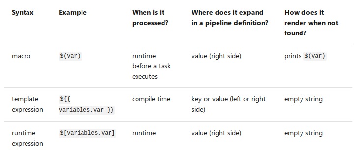

Continuous Integration¶
We use a so-called continuous integration workflow with TARDIS. This means that each time a change is proposed (via pull request) or a change is merged into the master branch, a service will clone the repository, checkout to the current commit and execute all the TARDIS tests. This helps us to detect bugs immediately.
Azure Repos¶
Azure Repos is just another service to store Git repositories.
Currently, we use Azure Repos to mirror tardis-refdata
repository since Azure does not impose limits on LFS bandwith
nor storage.
To clone this repository:
git clone https://tardis-sn@dev.azure.com/tardis-sn/TARDIS/_git/tardis-refdata
To download a LFS file trough HTTPS:
https://dev.azure.com/tardis-sn/TARDIS/_apis/git/repositories/tardis-refdata/items?path=atom_data/kurucz_cd23_chianti_H_He.h5&resolveLfs=true
This mirror is automatically synced by a GitHub workflow. If you want
to update it manually, remember to set git config http.version HTTP/1.1
to avoid error 413 while pushing large files.
Azure Pipelines & GitHub Actions¶
Currently, we use the Azure DevOps service to run most of our pipelines and GitHub Actions for some others (called “workflows”). The following sections explains briefly the different components of a pipeline/workflow, mostly focused on the Azure service.
A pipeline (or a workflow) is essentially a YAML configuration file with different sections such as variables, jobs and steps. These files run commands or tasks when they are triggered by some event, like a commit being pushed to a certain branch.
Pipelines on Azure must be created through the web UI for the first time.
Then, making changes to an existing pipeline is as easy as making a pull
request. To create a new workflow on GitHub, just create a new YAML file
in .github/workflows.
Triggers¶
First thing to do is telling the pipeline when it should run. In Azure, trigger (also known as the CI trigger) sets up the pipeline to run every time changes are pushed to a branch.
trigger:
- master
If some trigger is not specified then the default configuration is assumed.
trigger:
branches:
include:
- '*'
pr:
branches:
include:
- '*'
This means the pipeline will start running every time changes are merged to any branch of the repository, or someone pushes new commits to a pull request.
If you want to run a pipeline only manually set both triggers to none.
trigger: none
pr: none
Notice that you can test changes in a pipeline by activating the PR trigger on a new pull request, even if that trigger is disabled on the YAML file present in the master branch.
On GitHub Actions these triggers are named push and pull_request,
and works mostly in the same way.
Warning
Triggers also can be set on the Azure’s web interface too, but this action is discouraged, since it overrides any trigger specified in the YAML file and could lead to confusing sitations.
There are more useful triggers such as the cron trigger, see the Azure documentation section on triggers for more information.
Variables¶
Variable syntax¶
Azure Pipelines supports three different ways to reference variables: macro, template expression, and runtime expression. Each syntax can be used for a different purpose and has some limitations.
What syntax should I use? Use macro syntax if you are providing input for a task. Choose a runtime expression if you are working with conditions and expressions. If you are defining a variable in a template, use a template expression.
Define variables¶
Usually, we define variables at the top of the YAML file.
variables:
my.var: 'foo'
steps:
- bash: |
echo $(my.var)
When a variable is defined at the top of a YAML, it will be available to all jobs and stages in the pipeline as a global variable. Variables at the stage level override variables at the root level, while variables at the job level override variables at the root and stage level.
Also, variables are available to scripts through environment variables.
The name is upper-cased and . is replaced with _. For example
variables:
my.var: 'foo'
steps:
- bash: |
echo $MY_VAR
To set a variable from a script task, use the task.setvariable logging
command.
steps:
- bash: |
echo "##vso[task.setvariable variable=my.var]foo"
- bash: |
echo $(my.var)
See the Azure documentation section on variables for more information.
Predefined variables¶
The most important (and confusing) predefined variables are the ones related to paths in Azure:
All folders for a given pipeline are created under
Agent.BuildDirectoryvariable, aliasPipeline.Workspace. This includes subdirectories like/sfor sources or/afor artifacts.Path to source code varies depending on how many repositories we fetch. For example, source code is located under the
Build.Repository.LocalPathvariable (aliasBuild.SourcesDirectory) when fetching a single repository, but after fetching a second repository code is moved automatically toBuild.Repository.LocalPath/repository-name.
See the Azure documentation to learn more about checking out multiple repositories.
Jobs¶
You can organize your pipeline into jobs. Every pipeline has at least one job. A job is a series of steps that run sequentially as a unit. In other words, a job is the smallest unit of work that can be scheduled to run.
jobs:
- job: myJob
pool:
vmImage: 'ubuntu-latest'
steps:
- bash: echo "Hello world"
Jobs can run in parallel (for example: run the same job on multiple OSes) or depend on a previous job.
See the Azure documentation section on jobs for more information.
TARDIS Pipelines¶
Brief description of pipelines already implemented on Azure or GitHub Actions.
The default template¶
Templates let you define reusable content, logic, and parameters. It functions like an include directive in many programming languages (content from one file is inserted into another file).
The common set of steps used across most TARDIS pipelines resides in the “default” template:
Force
set -eon all Bash steps.Set TARDIS custom variables.
Fetch TARDIS main repository.
Fetch TARDIS reference data repository from mirror (optional).
Configure Anaconda for Linux and macOS agents.
Install Mamba package manager (optional).
Install TARDIS environment (optional).
Build and install TARDIS (optional).
It was written to make pipelines easier to create and mantain. For example, to start a new pipeline use:
steps:
- template: templates/default.yml
parameters:
useMamba: true
List of template parameters:
fetchDepth(int): the depth of commits to fetch fromtardisrepository, default is0(no limit).fetchRefdata(bool): fetch thetardis-refdatarepository from Azure Repos, default isfalse.refdataRepo(option): source of thetardis-refdatarepository, options areazure(default) orgithub.useMamba(bool): use themambapackage manager instead ofconda, default isfalse.tardisEnv(bool): setup the TARDIS environment, default istrue.
List of predefined custom variables:
tardis.diris equivalent to$(Build.SourcesDirectory)/tardis.refdata.diris equivalent to$(Build.SourcesDirectory)/tardis-refdata.
See the Azure documentation section on templates for more information.
Documentation build pipeline¶
A GitHub Actions workflow that builds and deploys the TARDIS documentation website.
Documentation preview pipeline¶
This workflow does not run on the main repository, just on forks. See the Documentation Preview section for more information.
Testing pipeline¶
The testing pipeline (CI) consists basically in the same job running twice in parallel (one for each OS) with the steps from the default template, plus extra steps to run the tests and upload the coverage results.
Authors pipeline¶
This pipeline runs a notebook located in tardis-zenodo repository and
pushes a new version of .zenodo.json to the root of tardis
repository if new commiters are found (or author order changes). The
rendered notebook is uploaded to the pipeline results as an artifact.
Warning
Fails if some author name is incomplete (due to an incomplete
GitHub profile) or duplicated (commited with more than one
email adress). In both cases update .mailmap to fix it.
In the near future we want to auto-update the citation guidelines in the
README.rst and the documentation.
Release pipeline¶
Publishes a new release of TARDIS every sunday at 00:00 UTC.
Compare reference data pipeline¶
This pipeline compares two versions of the reference data. It’s triggered manually via the Azure Pipelines web UI, or when a TARDIS contributor leaves the following comment on a pull request:
/AzurePipelines run compare-refdata
For brevity, you can comment using /azp instead of /AzurePipelines.
By default, generates new reference data for the HEAD of the pull request. Then,
compares against latest reference data stored in tardis-refdata repository. If
you want to compare two different labels (SHAs, branches, tags, etc.) uncomment and
set the ref1.hash and ref2.hash variables in
.github/workflows/compare-refdata.yml on your pull request. For example:
.. code-block:: yaml
ref1.hash: ‘upstream/pr/11’ ref2.hash: ‘upstream/master’
The web UI also allows to compare any version of the reference data by providing those variables at runtime, but the access to the dashboard is restricted to a small group of developers.
Warning
If using the Azure dashboard, do not define ref1.hash and ref2.hash
between quotation marks or the pipeline will fail. This does not apply for
the YAML file.
Finally, the report is uploaded to the
OpenSupernova.org server
following the <pr>/<commit> folder structure. If the pipeline fails, also a report is
generated, but not necessarily gives useful debug information (depends on which step the
pipeline has failed).